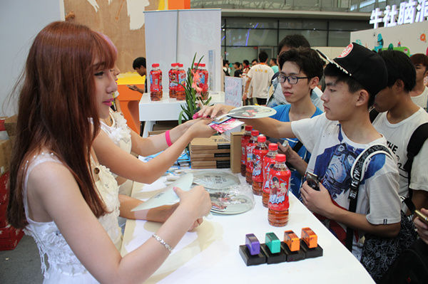

2015世纪天成CJ第二日 精彩依旧不断
发布日期：2015年07月31日
今年的Chinajoy真的是把“高温”这两个字体现得淋漓尽致，但是再高的温度也抵不过玩家们的热情。2015Chinajoy第二天，一大早玩家就已经把世纪天成展台围得水泄不通！伴着玩家们的热情，世纪天成展台美丽的Showgirl开始了开场的走秀环节！靓丽的外表，妖娆的身段，现场闪光灯一刻也停不下来！

//www.tiancity.com/
7月31日
发布日期：2015年07月31日
今年的Chinajoy真的是把“高温”这两个字体现得淋漓尽致，但是再高的温度也抵不过玩家们的热情。2015Chinajoy第二天，一大早玩家就已经把世纪天成展台围得水泄不通！伴着玩家们的热情，世纪天成展台美丽的Showgirl开始了开场的走秀环节！靓丽的外表，妖娆的身段，现场闪光灯一刻也停不下来！